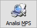
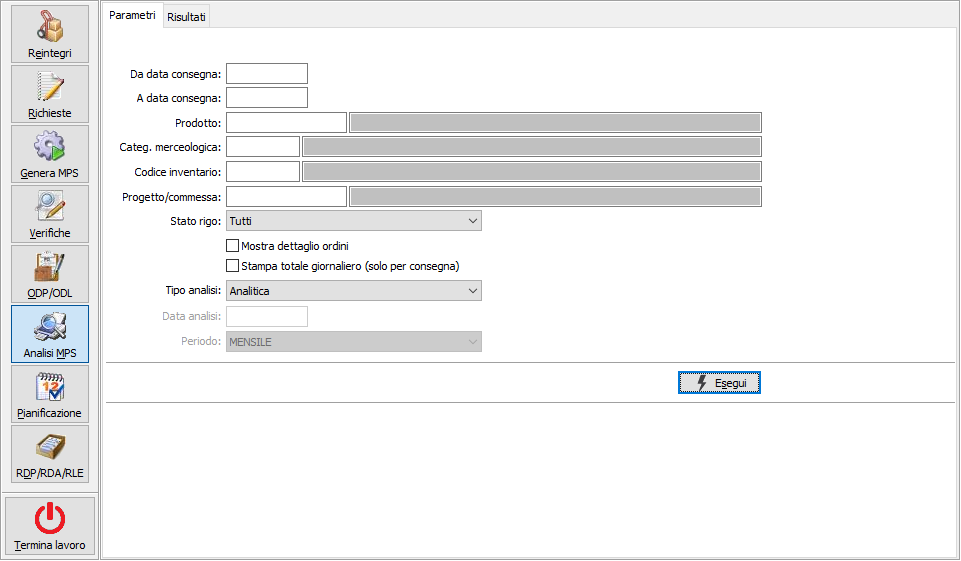
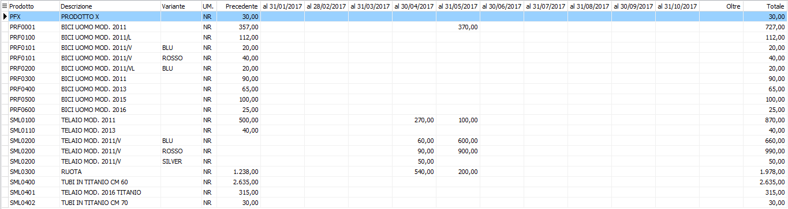
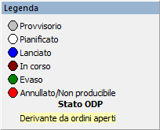
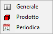
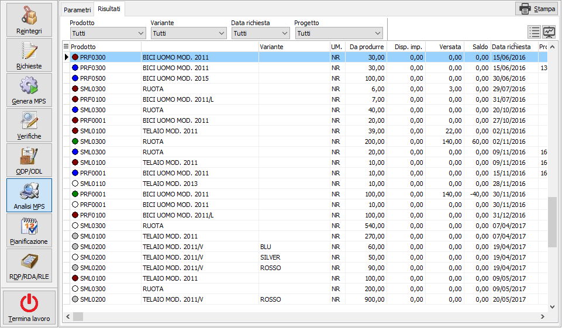
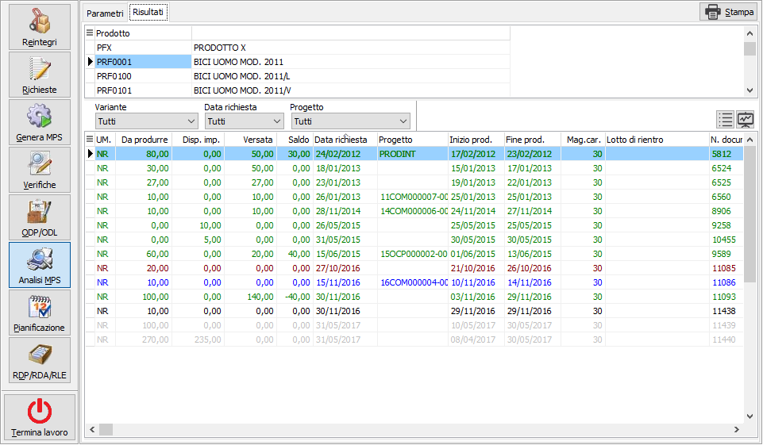
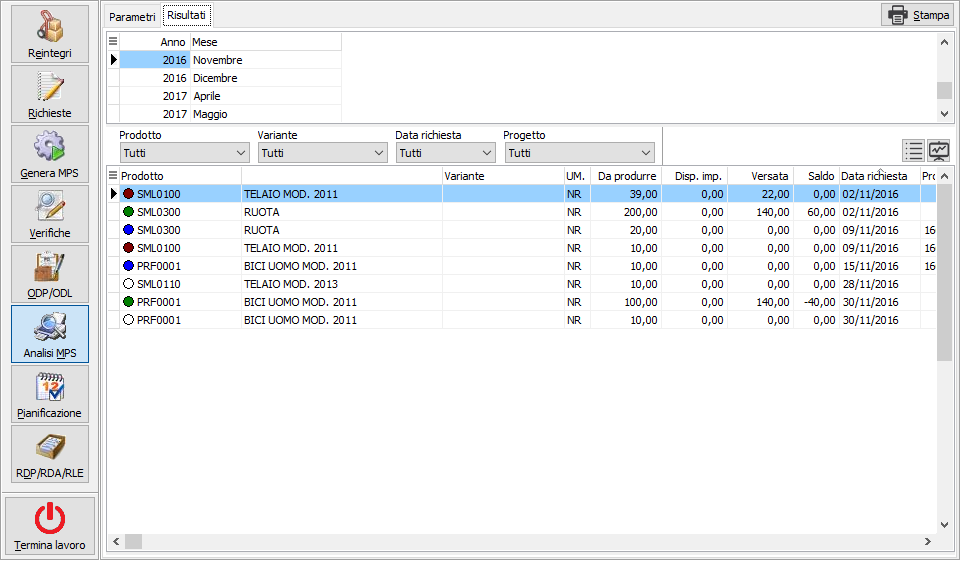
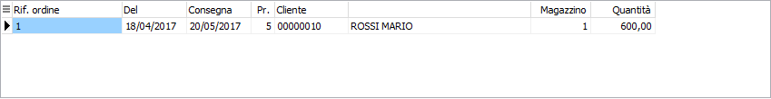

Analisi MPS

Disponibile sia dalla gestione piano sia da menù la funzione consente l’analisi degli ODP in corso. I limiti richiesti a video consentono di selezionare un periodo relativo alle date di consegna di produzione, un singolo prodotto, categoria merceologica, codice inventario e se gestito anche uno specifico progetto; è possibile interrogare gli ODP filtrandone lo stato di avanzamento e con la possibilità di scegliere tra i singoli stati oppure una combinazione che corrisponde al "Da evadere" e comprende gli stati di pianificato, lanciato ed in corso; è possibile indicare di visualizzare il dettaglio degli ordini collegati all'ODP e riportare nella stampa dell'analisi per consegna i totali giornalieri.Effettuando l'analisi per orizzonte temporale è possibile specificare la data di analisi ed il periodo da utilizzare per elaborare gli ODP selezionati; il periodo di analisi deriva dalla compilazione della Configurazione periodi, di conseguenza è completamente personalizzabile in base alle esigenze dell'operatore.
Confermando tramite pressione del bottone Esegui, vengono visualizzati nella linguetta Risultati gli ODP rispondenti alla selezione effettuata; da questa sezione utilizzando il pulsante Stampa è possibile stampare quanto riportato in finestra.

Analisi per orizzonte temporale
Questo tipo di analisi si compone di una griglia che riporta il prodotto e l'unità di misura primaria, l'eventuale variante, una colonna che riporta il totale relativo al periodo antecedente la data di analisi, 10 colonne che variano in relazione al tipo di analisi richiesto ed alla composizione del periodo, una colonna per il totale successivo all'ultimo periodo ed una colonna che riporta il totale delle colonne precedenti. Riportiamo a titolo di esempio un'analisi relativa ad un periodo impostato come quindicina con data analisi 1 Dicembre 2011.

Analisi analitica
Questo tipo di analisi si compone di una griglia che riporta i dati selezionati in base ai criteri scelti; sopra le colonne sono presenti delle caselle che consentono di filtrare la visualizzazione in relazione ai valori delle singole colonne: ad esempio cliccando sulla colonna prodotto, se presenti più codici, selezionandone uno saranno visualizzate solo le righe dove compare il prodotto selezionato; le caselle di filtro sono combinabili, ad esempio seleziono un prodotto ed una variante.

 Nella griglia è presente un indicatore
colorato che identifica lo stato dell'ODP del prodotto. E' presente anche
un pulsante che richiama la legenda dove sono riportati i significati
degli indicatori colorati relativi allo stato dell'ODP.
Nella griglia è presente un indicatore
colorato che identifica lo stato dell'ODP del prodotto. E' presente anche
un pulsante che richiama la legenda dove sono riportati i significati
degli indicatori colorati relativi allo stato dell'ODP.

E' inoltre presente un pulsante che richiama un menù dove è possibile cambiare la tipologia di analisi; l'analisi generale è quella di base e riporta tutti i dati selezionati; l'analisi per prodotto riporta una griglia con i prodotti che consente di visualizzare i dati raggruppati in relazione ai singoli prodotti; l'analisi periodica riporta una griglia con i periodi, relativi alla data richiesta, per consultare i dati raggruppati per anno e mese.In ogni analisi premendo il pulsante Stampa è possibile effettuare la stampa dei valori come attualmente visualizzati, sia generale, che per prodotto o periodica; per quest'ultima se è stato richiesto nei parametri sarà stampato anche il totale giornaliero.
Riportiamo di seguito un esempio di ciascuna analisi.



Se è stato richiesto di riportare i riferimenti ordine sarà presente in basso anche la griglia sottostante.
